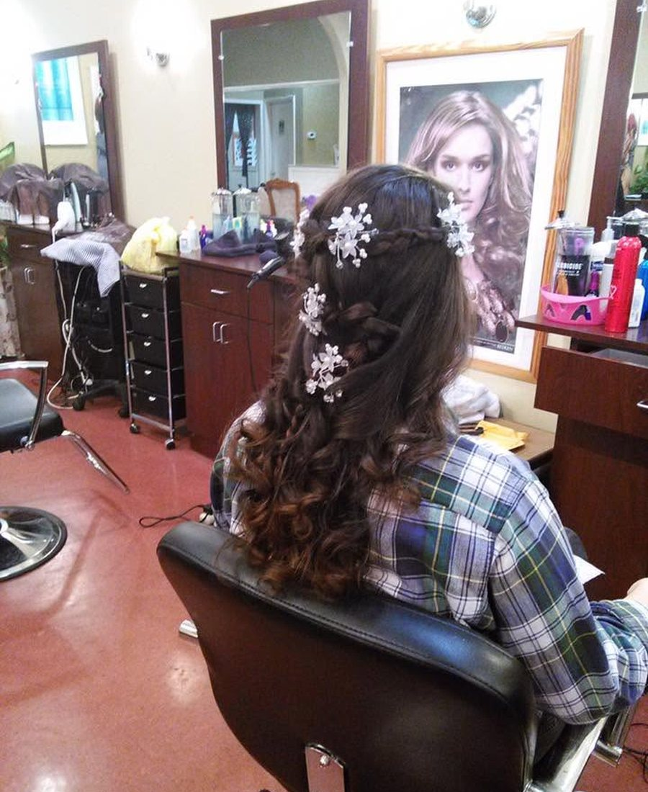

Bridal trials, day-of hair and makeup, bridal party services, and event styling with a calm, consultation-first process.
The most important part of bridal work is the trial. We take the time to test the look, talk through the timeline, and make sure nothing about the day-of styling feels uncertain or improvised.
Hair Xpressions has prepared brides across Northern Virginia for intimate ceremonies, larger traditional weddings, and multi-service event mornings where timing matters as much as artistry.
On the day of the event, the goal is simple: stay on schedule, keep everyone calm, and send the party out looking finished in every photo.
See Bridal Packages
Each package is customizable. We use the consultation to scope timing, services, party size, and whether the salon or an on-location setup makes more sense.
Bridal pricing is always quoted after consultation because timing, party size, travel, and service mix change the final plan.
A simple structure we can walk through once the consultation is booked.